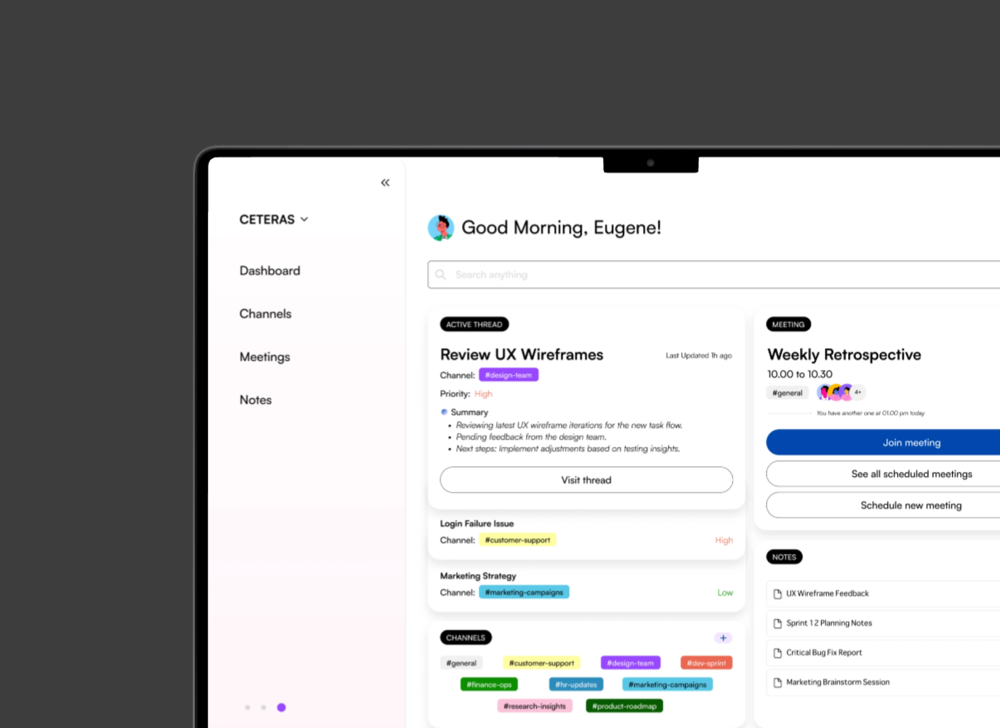
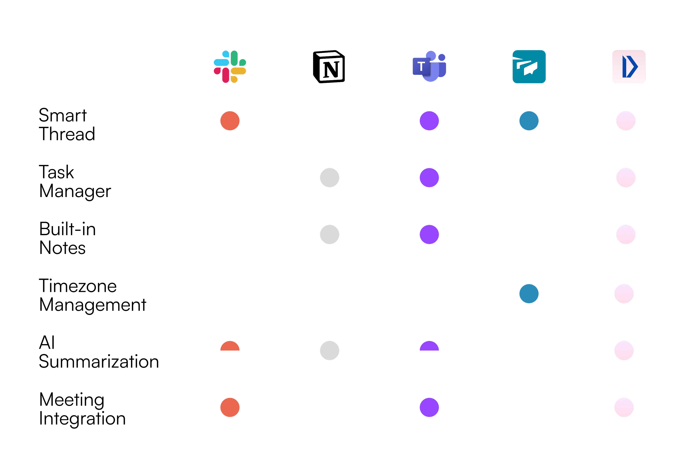

FLUX
Remote teams struggle with scattered communication, timezone confusion, notification overload, and no single place to track work. FLUX is a unified, human-centered platform that brings clarity, connection, and control back to distributed workflows — without overwhelming users with complexity.

FLUX is a personal project exploring what a human-centered productivity platform could look like for remote teams — one that brings together communication, scheduling, and task tracking without the noise that most async tools accumulate.
The project spans user research, information architecture, and mobile UI design, built around the core tension between staying connected and staying focused across timezones.
Distributed teams shared a common set of problems: scattered communications, timezone confusion, fragmented tools, and inconsistent documentation. Project updates were lost across multiple platforms, important context buried in long chat logs, and scheduling meetings across time zones often led to miscommunication.
Design a unified, human-centered platform that could bring clarity, connection, and control back to remote workflows — without overwhelming users with complexity.
I interviewed eight remote professionals across product, design, marketing, and engineering. Several core themes emerged.
Juggling multiple platforms for chat, meetings, and task updates drains focus and increases the risk of missing key information.
Scheduling across time zones creates delays and misunderstandings, often leading to missed updates or late responses.
In most tools, threaded discussions grow unwieldy over time, making it difficult to trace decisions, find context, or onboard new collaborators.
Users wanted features like summarization or task extraction — but were cautious about automation that felt opaque or uncontrollable.
A review of existing tools revealed a clear gap in solutions that effectively balance asynchronous clarity, human connection, and centralized control — especially for distributed teams. Slack, Notion, and Teams each address parts of the remote workflow, but none offer a seamless experience across communication, task management, and timezone coordination.
FLUX is uniquely positioned to fill this gap by integrating Smart Threads, Timezone Awareness, and a built-in calling and support system — delivering on the core values of clarity, connection, and control.

Cut through scattered tools and noise. Surface what matters first.
Make async feel human — across time zones, threads, and screens.
Keep the human in the loop. AI assists; people decide.
FLUX is organized around four main pages. Each section branches into key features that support remote teams in managing async clarity, centralized control, and meaningful collaboration.
When a discussion becomes lengthy or complex, users tap "Show Summary" to instantly surface a concise recap of the key points — without losing the underlying thread.
Set thread status — Open, In review, Resolved — so collaborators see the state of a conversation at a glance, no scroll-back required.
Highlight content from docs or notes and share it in chat as a clickable reference — keeping discussions traceable and source-linked.
Shows a teammate's local time on hover, making cross-timezone coordination effortless and unobtrusive.
Bring specific chat messages into a thread so teams can centralize discussion history. Context isn't lost across channels.
Captures meeting discussions into linked, summarized notes with key points and action items. Users can disable AI summarization anytime, maintaining human control and verification.
FLUX was deeply personal — built from my own experience working remotely during my second internship. I realized how often things get lost across tools, time zones, and threads.
Through this project I learned to design for asynchronous team dynamics, prioritize clarity and focus, and balance AI support with human control.
A professor I tested with suggested incorporating team "pulse" features — a reminder that even in async environments, emotional insight and alignment matter just as much as productivity.
The next iteration of FLUX would lean further into that signal: not more tools, but more care embedded in the ones that already exist.
Sté is short for Steven — and it's a small wink at stay. It's the thread running through my work: design that invites people to stay engaged, art that holds attention, fragrances that linger long after the wearer leaves the room. Welcome. Sté with me a while.